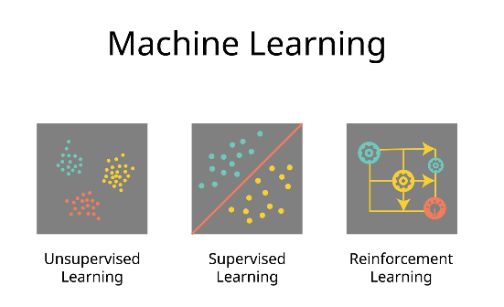
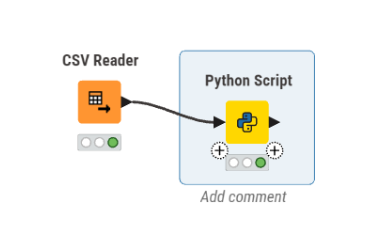
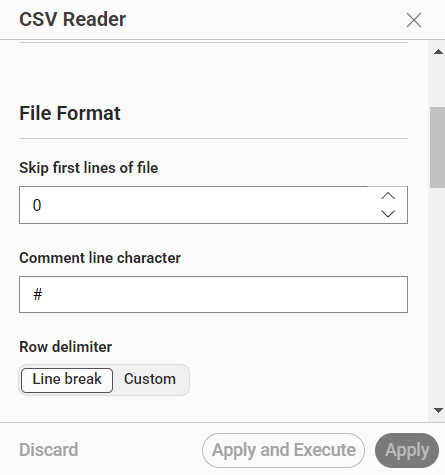
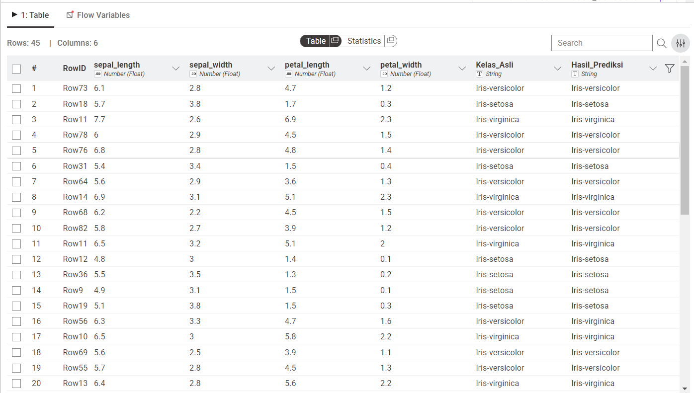
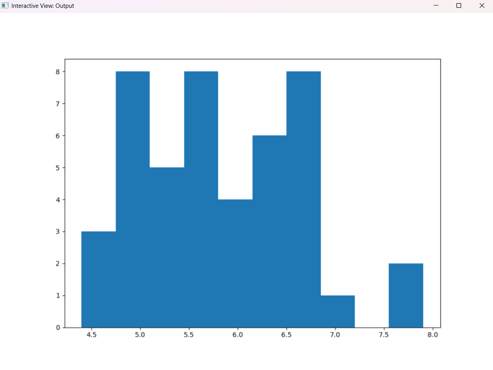

Pertemuan 10#
Laporan Analisis Klasifikasi Data Bunga Iris Menggunakan Algoritma Naive Bayes melalui Integrasi KNIME dan Python#
1. Pendahuluan#
Proyek ini bertujuan untuk membangun model klasifikasi machine learning menggunakan algoritma Naive Bayes. Model ini dikembangkan untuk mengklasifikasikan spesies bunga Iris berdasarkan atribut fisiknya.
Berbeda dengan pendekatan visual standar pada KNIME yang menggunakan node klasifikasi bawaan, proyek ini mengadopsi pendekatan berbasis scripting dengan memanfaatkan ekstensi KNIME Python Integration. Pemodelan dilakukan sepenuhnya di dalam node Python menggunakan pustaka Scikit-Learn (sklearn.naive_bayes.GaussianNB), yang memberikan fleksibilitas lebih tinggi dalam kustomisasi kode dan evaluasi model.
1.1 Latar Belakang dan Konsep Pembelajaran Terarah#
Dalam disiplin Data Mining dan Machine Learning, terdapat dua paradigma utama pembelajaran: Supervised Learning dan Unsupervised Learning. Proyek klasifikasi bunga Iris ini termasuk dalam kategori Supervised Learning (pembelajaran terarah). Berbeda dengan Unsupervised Learning (seperti Clustering) yang mencari pola tersembunyi tanpa label, Supervised Learning menggunakan dataset yang sudah memiliki label kelas (spesies) sebagai referensi untuk melatih model.
Tujuan utama dari proyek ini adalah membangun model Klasifikasi, yaitu sebuah proses memprediksi label kelas (kategorikal/diskrit) untuk data baru yang belum pernah dilihat sebelumnya berdasarkan pola yang dipelajari dari data historis.

1.2 Algoritma Naive Bayes#
Algoritma yang dipilih untuk proyek ini adalah Gaussian Naive Bayes. Algoritma ini didasarkan pada Teorema Bayes yang menghitung probabilitas posterior berdasarkan prior probability dan likelihood. Karakteristik utama Naive Bayes adalah asumsi independensi antar variabel, yang berarti kehadiran satu fitur tidak dipengaruhi oleh fitur lainnya. Varian Gaussian secara khusus digunakan dalam kasus ini karena atribut fisik bunga Iris (panjang dan lebar sepal/petal) bersifat kontinu dan diasumsikan mengikuti distribusi normal (Gaussian).
1.3 Tahapan Persiapan Data (Data Preparation)#
Sebelum model dapat diimplementasikan, data harus melalui fase persiapan guna menjamin akurasi prediksi. Isu-isu utama dalam Data Preparation yang ditangani dalam alur kerja ini meliputi:
-Data Cleaning: Memastikan data tidak memiliki nilai kosong (missing values) yang dapat mengganggu perhitungan probabilitas.
-Data Transformation: Dalam skrip Python, data dikonversi dari format tabel KNIME menjadi struktur Pandas DataFrame agar dapat diolah oleh pustaka Scikit-Learn.
-Data Splitting: Melakukan partisi dataset menjadi dua bagian utama:
Training Set (70%): Digunakan oleh algoritma untuk mempelajari karakteristik tiap spesies.
Testing Set (30%): Digunakan untuk mengevaluasi sejauh mana model mampu menggeneralisasi data baru tanpa terjadi overfitting.
1.4 Pendekatan Integrasi KNIME dan Python#
Proyek ini mengadopsi pendekatan hibrida. Meskipun KNIME menyediakan node visual untuk klasifikasi, penggunaan KNIME Python Integration (melalui skrip sklearn.naive_bayes.GaussianNB) memberikan keunggulan berupa:
Fleksibilitas Tinggi: Memungkinkan kustomisasi parameter algoritma yang tidak tersedia pada node standar.
Efisiensi Skrip: Memanfaatkan efisiensi komputasi dari pustaka Scikit-Learn yang merupakan standar industri.
Transparansi: Mempermudah dokumentasi logika pemodelan langsung di dalam kode untuk keperluan audit model atau riset lebih lanjut.#
2. Spesifikasi Lingkungan Kerja dan Dataset#
2.1. Perangkat dan Pustaka (Tools & Libraries)#
Platform: KNIME Analytics Platform.
Bahasa Pemrograman: Python 3.x.
Pustaka Utama:
knio(Untuk menjembatani I/O data antara KNIME dan Python).pandas(Manipulasi dan analisis data).scikit-learn(Pembuatan model machine learning dan metrik evaluasi).
2.2. Deskripsi Dataset#
Dataset yang digunakan adalah Iris Dataset (iris.csv). Dataset ini terdiri dari fitur-fitur numerik kontinu yang merepresentasikan ukuran fisik kelopak dan mahkota bunga, yaitu:
sepal_length(Panjang Sepal)sepal_width(Lebar Sepal)petal_length(Panjang Petal)petal_width(Lebar Petal)
Variabel Target (Class): species (Terdiri dari 3 kelas: Iris-setosa, Iris-versicolor, Iris-virginica).
3. Arsitektur Workflow KNIME#
Alur kerja (workflow) yang dibangun pada KNIME sangat ringkas namun esensial, terdiri dari tahap ingesti data hingga tahap komputasi model.

Gambar 1: Arsitektur Workflow KNIME yang terdiri dari node CSV Reader yang terhubung langsung ke node Python Script.
3.1. Tahap 1: Ingesti Data (Node CSV Reader)#
Langkah pertama adalah memuat dataset ke dalam memori KNIME.
Node yang digunakan:
CSV Reader.Konfigurasi: Node diarahkan pada direktori penyimpanan lokal file
iris.csv. Parameter delimiter dikonfigurasi menggunakan koma (,) dan opsi has column header diaktifkan agar baris pertama dibaca sebagai nama fitur.

Gambar 2: Jendela konfigurasi pada node CSV Reader untuk memuat dataset Iris.
3.2. Tahap 2: Pemrosesan & Pemodelan (Node Python Script)#
Data yang telah dimuat kemudian diteruskan (melalui output port CSV Reader ke input port Python Script) untuk diproses lebih lanjut menggunakan kode Python.
4. Implementasi Kode Algoritma Naive Bayes#
Pada node Python Script, model klasifikasi dibangun menggunakan algoritma Gaussian Naive Bayes. Varian Gaussian dipilih karena asumsi distribusi normal dinilai paling cocok untuk menangani nilai kontinu pada fitur dataset Iris.
Berikut adalah implementasi kode lengkapnya:
import knime.scripting.io as knio
from sklearn.model_selection import train_test_split
from sklearn.naive_bayes import GaussianNB
from sklearn.metrics import accuracy_score, classification_report
# --- 1. DATA INGESTION DARI KNIME ---
# Membaca data yang masuk dari input port 0 di KNIME dan mengonversinya menjadi Pandas DataFrame
df = knio.input_tables[0].to_pandas()
# Mendefinisikan nama kolom target (sesuaikan dengan header file CSV Anda)
target_column = 'species'
# --- 2. DATA PREPARATION ---
# Memisahkan matriks fitur (X) dan vektor target (y)
X = df.drop(columns=[target_column])
y = df[target_column]
# Membagi dataset menjadi Data Latih (70%) dan Data Uji (30%)
# random_state diatur untuk memastikan reproduktibilitas hasil
X_train, X_test, y_train, y_test = train_test_split(X, y, test_size=0.3, random_state=42)
# --- 3. MODELING (TRAINING) ---
# Menginisialisasi model Gaussian Naive Bayes
nb_classifier = GaussianNB()
# Melatih model menggunakan data latih
nb_classifier.fit(X_train, y_train)
# --- 4. PREDICTION & EVALUATION ---
# Melakukan prediksi terhadap data uji
y_pred = nb_classifier.predict(X_test)
# Menghitung akurasi model
accuracy = accuracy_score(y_test, y_pred)
print(f"Akurasi Model Gaussian Naive Bayes: {accuracy * 100:.2f}%")
# (Opsional) Menampilkan laporan klasifikasi lengkap di console KNIME
print("\nLaporan Klasifikasi:\n", classification_report(y_test, y_pred))
# --- 5. DATA EXPORT KE KNIME ---
# Menyusun DataFrame baru untuk menampilkan hasil perbandingan
result_df = X_test.copy()
result_df['Actual_Class'] = y_test
result_df['Predicted_Class'] = y_pred
# Mengirim kembali DataFrame hasil prediksi ke output port 0 di KNIME
knio.output_tables[0] = knio.Table.from_pandas(result_df)

Gambar 3: Output tabel di KNIME yang membandingkan nilai Actual_Class dan Predicted_Class pada subset data uji.
5. Analisis Langkah Komputasi (Code Breakdown)#
Proses di atas dibagi menjadi beberapa fase komputasional:
Ekstraksi I/O KNIME (knio): Library knio memungkinkan terjadinya transisi mulus dari struktur tabel KNIME ke struktur Pandas DataFrame di memori Python.
Splitting Dataset (train_test_split): Menghindari overfitting dengan menyisihkan 30% dari total data secara acak sebagai data pengujian.
Pelatihan (Fitting) Model (GaussianNB): Algoritma menghitung probabilitas prior dari setiap kelas (setosa, versicolor, virginica) dan probabilitas likelihood dari setiap fitur berdasarkan asumsi distribusi Gaussian (kurva lonceng).
Rekonstruksi Hasil (Data Export): Prediksi (Predicted_Class) digabungkan kembali dengan data aktual (Actual_Class) beserta fitur aslinya untuk mempermudah validasi secara kasat mata melalui output table KNIME.
6. Hasil dan Evaluasi#
Setelah node Python Script dieksekusi (F7), console akan mencetak nilai metrik evaluasi model (seperti akurasi dan presisi). Melalui menu Table and Image Output pada node tersebut, kita dapat melihat secara langsung komparasi antara kelas aktual dan kelas hasil prediksi sistem.

Gambar 4: Output gambar di KNIME yang membandingkan nilai Actual_Class dan Predicted_Class pada subset data uji.
7. Kesimpulan#
Integrasi KNIME dan skrip Python (Scikit-Learn) berhasil mengimplementasikan metode klasifikasi Gaussian Naive Bayes. Pendekatan ini membuktikan bahwa KNIME tidak hanya tangguh sebagai visual programming tool, tetapi juga sangat fleksibel untuk menampung custom logic code, memberikan keleluasaan penuh bagi Data Scientist dalam melakukan penyesuaian parameter dan pelaporan evaluasi machine learning.